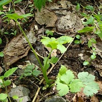

みつば（三つ葉）の生産量
いちばん多くとれる都道府県
みつばが日本でいちばん多くとれるのは千葉県です。2,900 tで、全国（1万2,900 t）の22%を占めます。

| 順位 | 都道府県 | 収穫量 | 全国に占める割合 |
|---|---|---|---|
| 1位 | 千葉県 | 2,900 t | 22% |
| 2位 | 愛知県 | 1,710 t | 13% |
| 3位 | 茨城県 | 1,570 t | 12% |
この数字について
- 分類：セリ科
- 全国の収穫量：1万2,900 t
- この数字が表すもの：収穫量（畑や田でとれた重さ）
- 調査：作物統計調査 作況調査（野菜） 令和6年産
- 10県分を調査（調査していない県は順位に入りません）